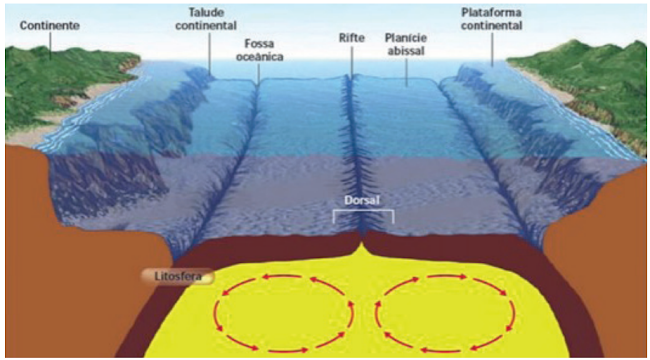

Descubra as Zonas do Oceano
Viaje pelas profundezas do oceano, conhecendo os animais, mistérios e estudos de cada camada. Cada rolagem é uma imersão na escuridão misteriosa das profundezas.

Zona Epipelágica — Superfície do mar (0–200 m)
Essa é a região mais próxima da superfície, onde a luz solar penetra intensamente. É rica em biodiversidade, com corais, golfinhos, tartarugas e peixes coloridos.
- Grande abundância de oxigênio e fitoplâncton.
- Altas temperaturas e forte interação ecológica.


Zona Mesopelágica — O Crepúsculo (200–1000 m)
Peixes-lanterna, lulas e tubarões pequenos vivem nesta zona. Adaptaram-se à penumbra e usam luz própria para atrair presas ou parceiros.


Zona Batipelágica — A Escuridão Total (1000–4000 m)
Com ausência de luz solar, apenas os organismos bioluminescentes brilham. A pressão é extrema e o frio constante.


Zona Abissal — As Planícies do Fundo (4000–6000 m)
Fria, escura e silenciosa, esta é uma das regiões mais misteriosas. Criaturas lentas e resistentes sobrevivem de restos orgânicos que caem das camadas superiores.


Zona Hadal — As Fendas Oceânicas (>6000 m)
Os fossos oceânicos são o ponto mais profundo do planeta. Quase nenhuma luz chega aqui, e a vida é escassa, mas fascinante: anfípodes gigantes e microrganismos resistentes.

.jpeg)